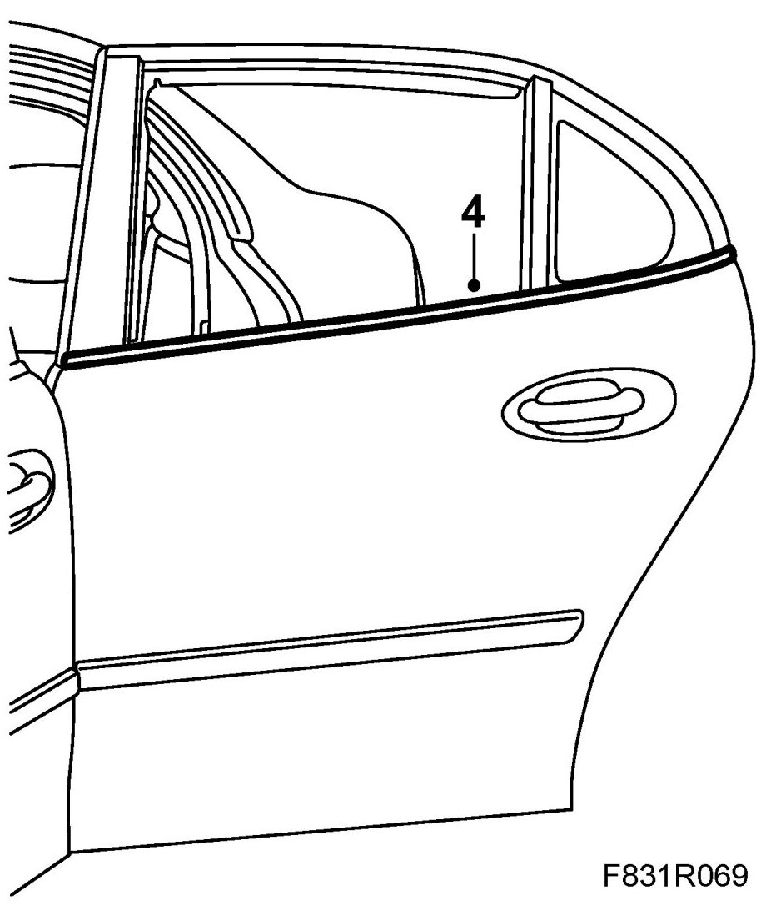
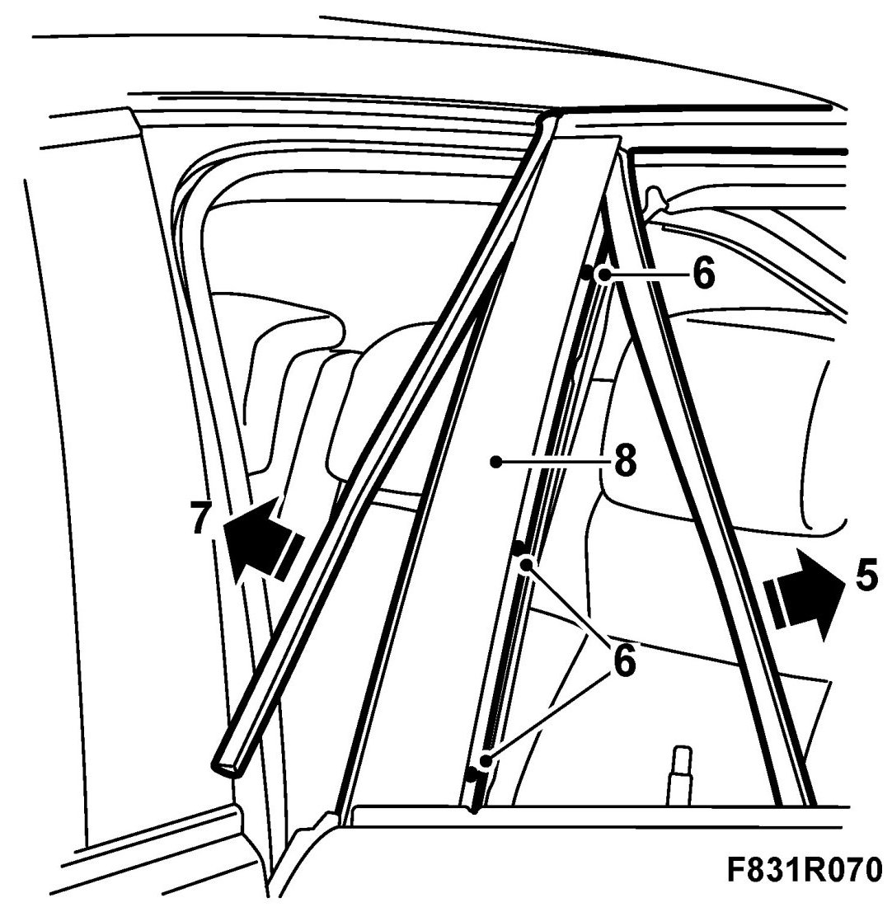
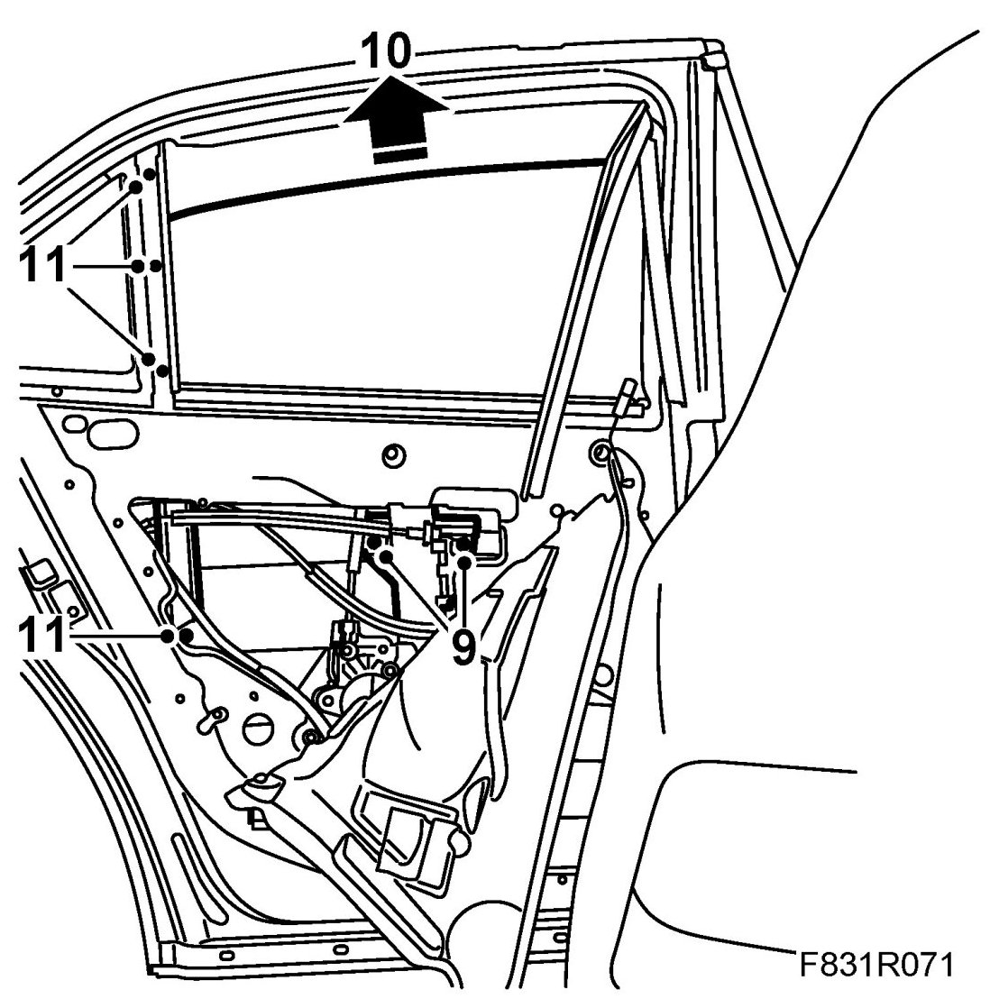
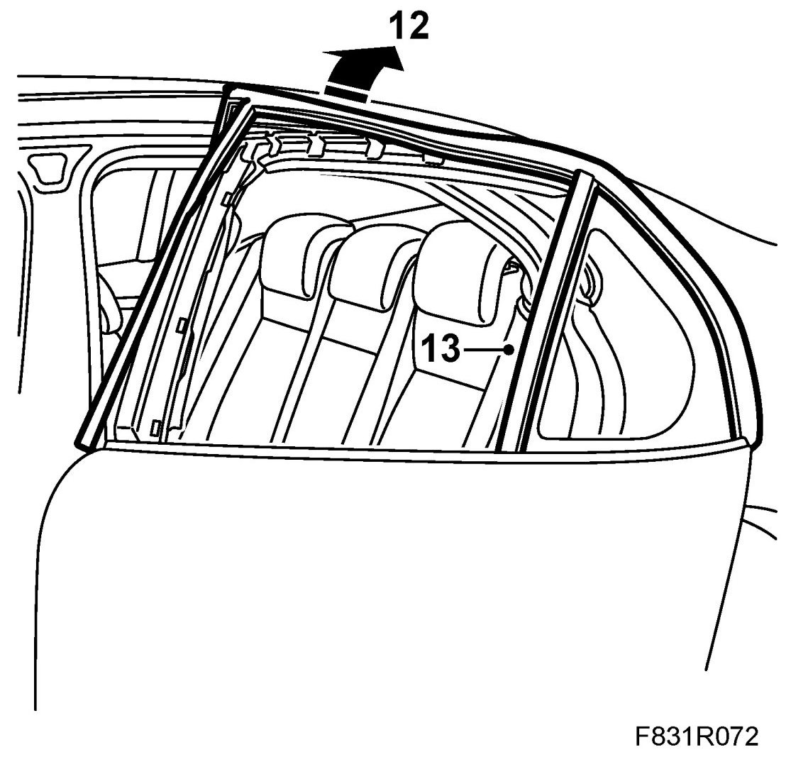
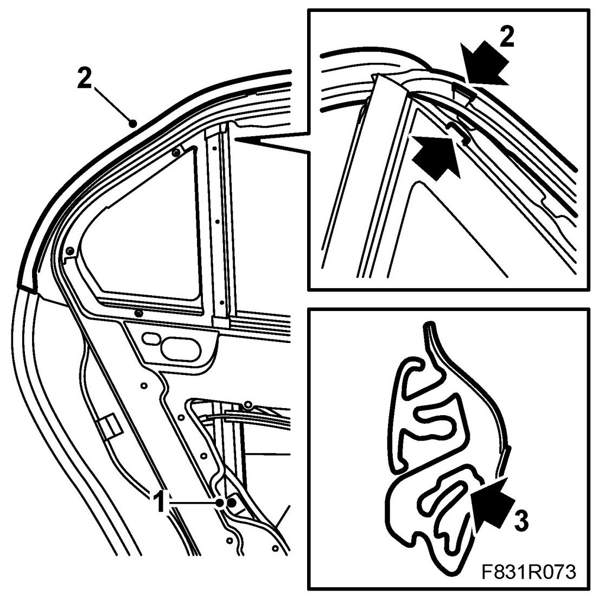
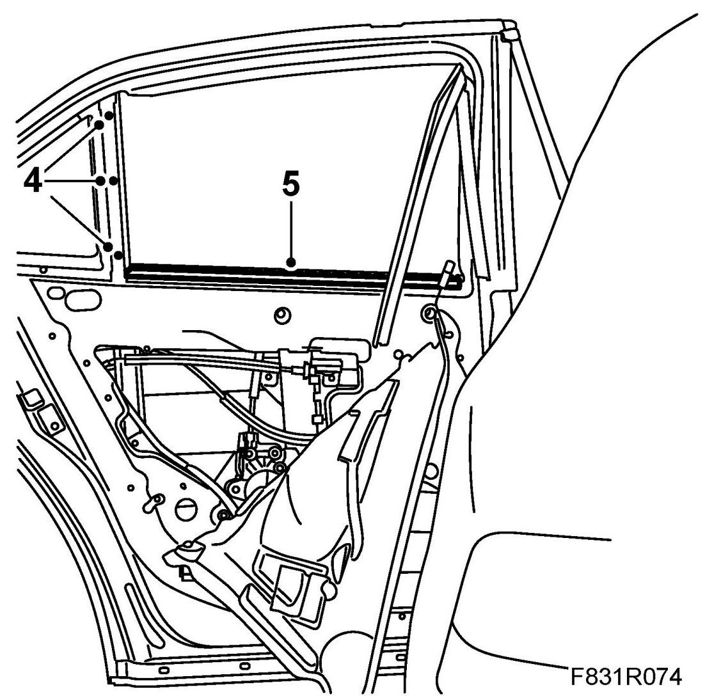
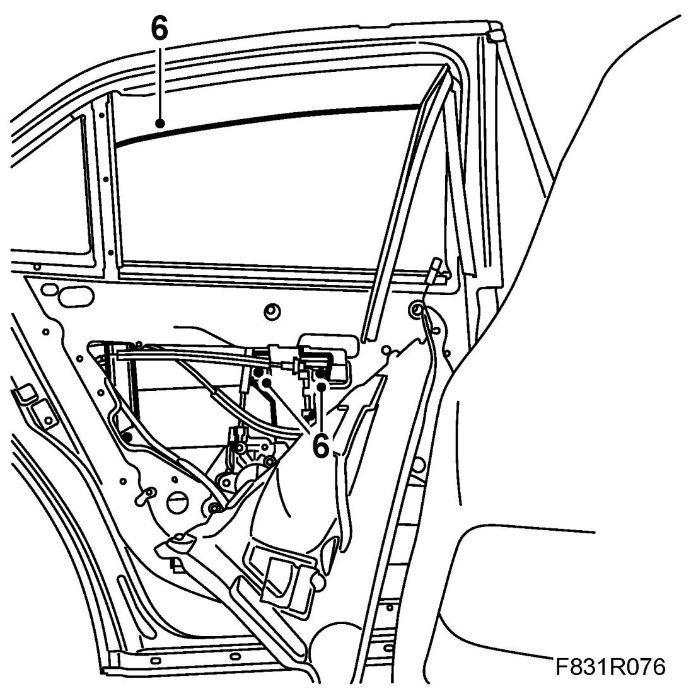
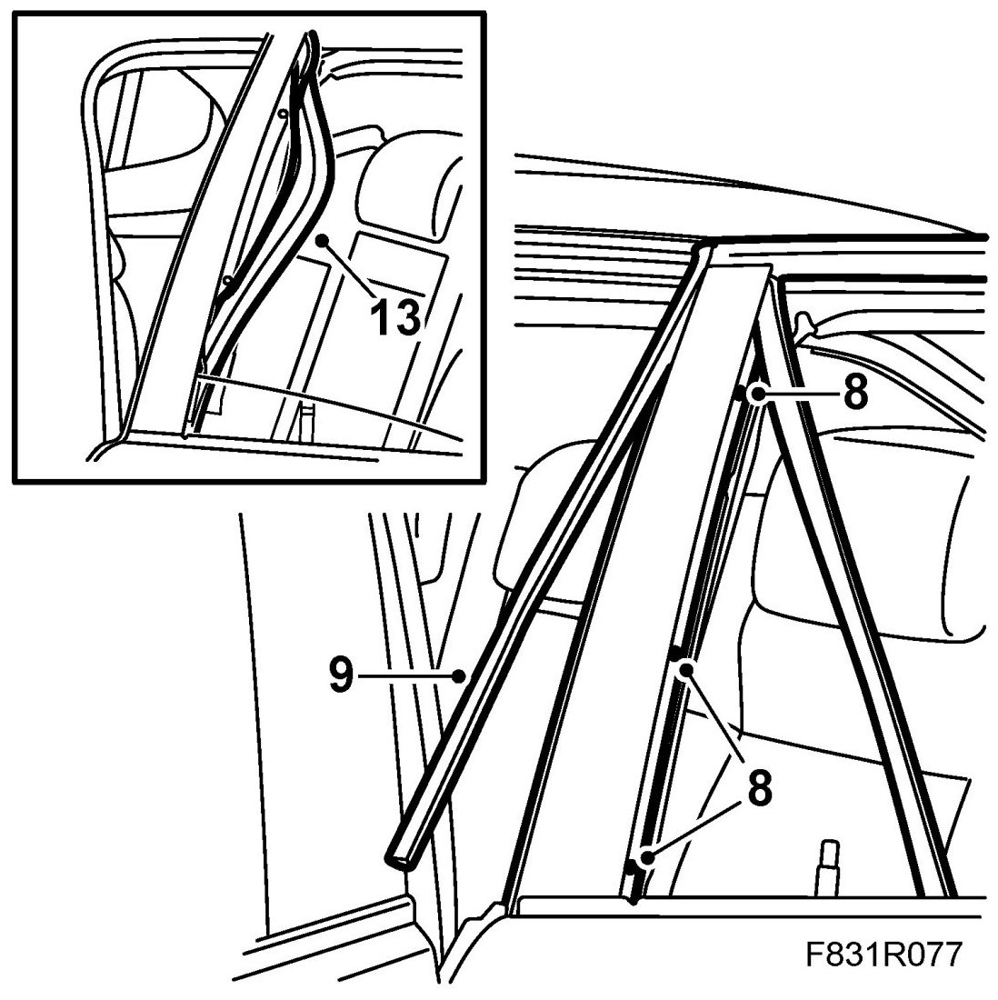
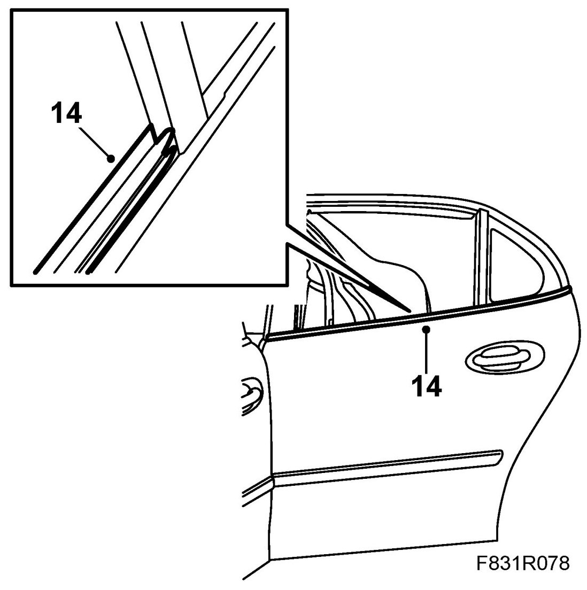

Rear Door Window Glass Weatherstrip: Service and Repair
Rear Door's Upper Rubber Moulding
Removing
1. Open the window fully.
2. Remove the rear door trim and fold down the moisture barrier.
3. Remove the Rear window frame cover.
4. Remove the outer weatherstrip by using 82 93 474 Removal tool.

5. Pull the front U-moulding up from the glass channel.

6. Remove the screws on the front glass channel.
7. Loosen the front side strip.
8. Lift up the front glass channel.
9. Raise the window so that you can access the window screws. Remove the window screws.

10. Lift out the window.
11. Remove the rear glass channels screws.
12. Remove the entire upper door moulding.

13. Remove the rear glass channel together with the rubber moulding.
14. Slip out the moulding from the rail.
Fitting
1. Position the rear glass channel together with the rubber moulding. Fit the glass channel's lower screw.

2. Fit the moulding over the window frame using 82 93 474 Removal tool. Start by fitting the moulding around the fixed side window. Make sure that the locating lug is aligned with the recess in the moulding.
3. Push the moulding from the outside so that it fits against the fixed side window. Make sure the moulding's inner flap lies over the door's plate flange.
4. When the moulding is fitted around the side window, fit the rear glass channel's screws. Make sure the rubber mouldings fits against the rear glass channel's upper end.
Now work along the whole of the top side of the door.

5. Remove the inner weatherstrip.
6. Fit the side window by angling it in towards the rear U-strip and pressing down the window towards the brackets.
Make sure the window lies against the rear U-strip. Fit the window's screws.

7. Open the window fully.
8. Fit the front glass channel.

9. Fit the front moulding. Make sure the lower part fits against the door's side strip.
10. Wind up the window about 5 cm to move the window a little.
11. Fit the front U-moulding by pushing it down towards the glass channel. Help by moving the window backward a little.
12. Continue fitting the U-moulding into the glass channel by pushing it down some more. Help by moving the window backward a little.
13. Lower the window completely and fit the rest of the moulding. Press in the moulding towards the glass channel. Check the operation of the side window.
14. Fit the outer and inner weatherstrips.

15. Fit the window frame cover.
16. Fit the moisture barrier and door trim.
17. Cars with pinch protection: Perform Programming of the pinch protection.